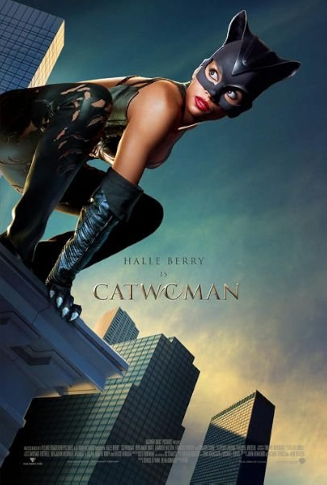

Catwoman is a superhero action film loosely based on the DC character, but it significantly departs from the source material, focusing on a new origin story and a stylized, cat-themed vigilante concept. The film is visually flashy, with heavy use of slow-motion action scenes and a glossy, music-video-like aesthetic. Halle Berry’s committed performance stands out, and the costume design and visual style were clearly aiming for a sleek, edgy tone. However, the film is widely criticized for its weak script, uneven pacing, and lack of coherent storytelling. The plot is thin and often feels disjointed, with underdeveloped characters and dialogue that doesn’t land effectively. Despite its ambitious style, it fails to build emotional weight or engaging stakes. Overall, it’s a visually stylized but poorly received superhero film that is often remembered more for its missteps than its successes.
